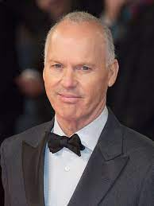

Michael John Douglas (Coraopolis, Pensilvania, 5 de septiembre de 1951), más conocido por su nombre artístico Michael Keaton, es un actor estadounidense, ganador de un Globo de Oro.
Es conocido por su vasta carrera e intervenciones en películas como la comedía de humor negro Beetlejuice (1988), encarnar al superhéroe de DC Comics, Batman, en Batman (1989) y su secuela, Batman Returns (1992) —las tres dirigidas por Tim Burton— con las que saltaría a la fama mundial y ganaría la aclamación de la crítica. También actuó en Multiplicity (1996), en el drama Jackie Brown (1997), en la comedia navideña Jack Frost (1999), White Noise (2005), en Toy Story 3 (2010) como la voz de Ken, en el drama Spotlight (2015), en la película biográfica The Founder (2016) como Ray Kroc, en Spider-Man: Homecoming (2017) como el supervillano de Marvel Comics, Buitre, y en la película drámatica legal histórica The Trial of the Chicago 7 (2020) como Ramsey Clark, con la que ganaría múltiples premios. En 2008 dirigió su primera película, en la que también actuó, The Merry Gentleman.
| Contáctame | Galería | Más info | John Lee Hancock | Galería John Lee | Robert D.Siegel | Galería Robert | Formulario | Michael Keaton | |